ATARI 65XE i 130XE
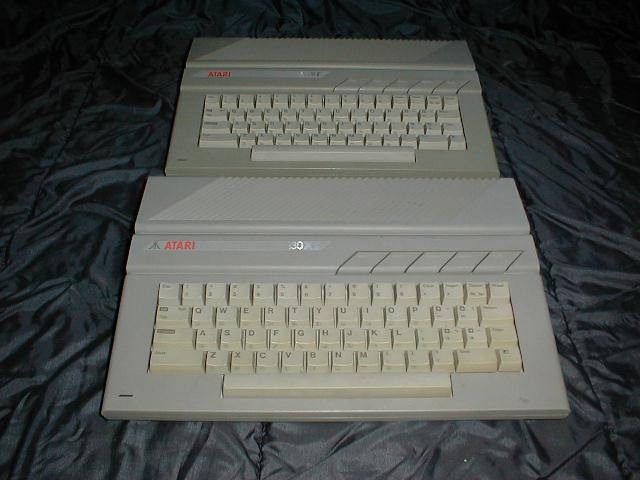
Seria komputerów XE przedstawiona zosta³a publicznie w styczniu 1985 r. na Consumer Electronic Show w Las Vegas.
By³y to modele 65XE, 130XE, 65XEM i 65XEP. Na rynku pojawi³y siê tylko dwa pierwsze modele.
Zainteresowanych szczegó³ami odsy³am do dzia³u HISTORIA.
Model 65XE by³ to 800XL bez tylnego z³±cza systemowego, w nowej obudowie, wzorniczo zgodnej z lini± ST.
Model 130XE by³ to 800XL z pamiêci± 128K w nowej obudowie.
Pó¼niejsze wersje 65XE posiada³y zunifikowan± obudowê i p³ytê
g³ówn± komputera 130XE. W Niemczech komputery te by³y sprzedawane pod nazw± 800XE.
Procesor 65C02 / 1.79MHz.
RAM 64kB (65XE i 800XE), 128K (130XE)
ROM 24kB
Procesor graficzny ANTIC + GTIA.
Rozdzielczo¶æ maksymalna 320 X 192 w trybie monochrome
Grafika: 16 trybów graficznych, 16 kolorów w 16 stopniach jasno¶ci
ka¿dy (256 kolorów)
Tekst: 3 tryby tekstowe 40 i 20 kolumn w 24 liniach, 10 kolumn w
12 liniach.
Wyj¶cie video: Composite luminance, Composite chroma, RF
modulator.
Porty: SIO, 2 gniazda joysticka, gniazdo kartrid¿a.
Urz±dzenia peryferyjne do³±czane do SIO
D¼wiêk: czterokana³owy generator POKEY.
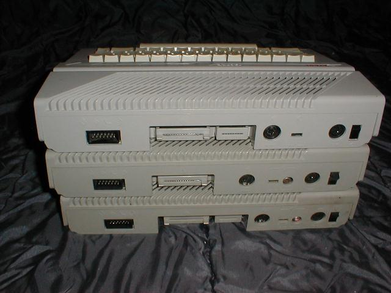
Powy¿sze zdjêcie przedstawia ró¿nice miêdzy obudowami komputerów serii XE.
Od góry: 130XE wersja SECAM (bez modulatora), 65XE i 130XE.
192XT
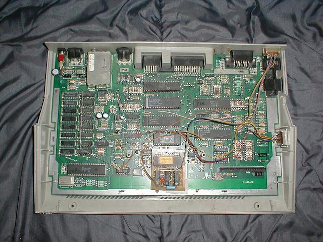
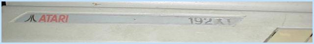
Zdjêcia przedstawiaj± komputer 192XT. Pod tak± nazw± sprzedawany by³ w Polsce przez firmê PZ Karen.
By³ to komputer 130XE z pamiêci± rozszerzon± do 192K i wbudowanym modu³em BASIC XL.
Zdjêcie górne przedstawia wnêtrze komputera, dolne - naklejkê z nazw± modelu.
Wykonano kilka sztuk.
ATARI XE SYSTEM
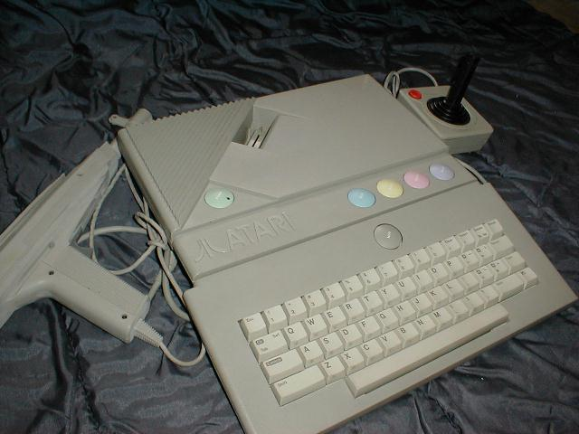
Procesor 65C02 / 1.79MHz.
RAM 64kB
ROM 32kB
Procesor graficzny ANTIC + GTIA.
Rozdzielczo¶æ maksymalna 320 X 192 w trybie monochrome
Grafika: 16 trybów graficznych, 16kolorów w 16 stopniach jasno¶ci
ka¿dy (256 kolorów)
Tekst: 3 tryby tekstowe 40 i 20 kolumn w 24 liniach, 10 kolumn w
12 liniach.
Wyj¶cie video: Composite Video (cinch), RF modulator.
Porty: SIO, 2 gniazda joysticka, gniazdo kartrid¿a.
Urz±dzenia peryferyjne do³±czane do SIO
D¼wiêk: czterokana³owy generator POKEY.
Ten model równie dobrze mo¿na zaliczyæ do komputerów jak i do konsol.
Posiada od³±czan± klawiaturê, a po jej od³±czeniu uruchamia siê wbudowana w ROM gra
Missile Command. XE System sprzedawana by³a w komplecie z kartrid¿em "Bug Hunter",
d¿ojstikiem i pistoletem "Light Gun".
Magnetofon XC11
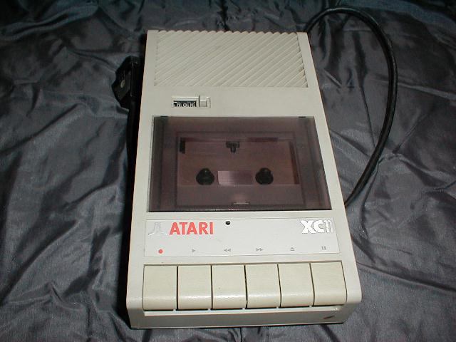
Jedyny magnetofon w pe³ni zgodny wzorniczo z lini± XE. To jeden
z najlepszych magnetofonów do komputerów o¶miobitowych Atari. Produkcja japoñska.
Jedyn± wad± tego magnetofonu by³o pêkanie przewodu masy zasilania w kablu ³±cz±cym.
Magnetofon XC12
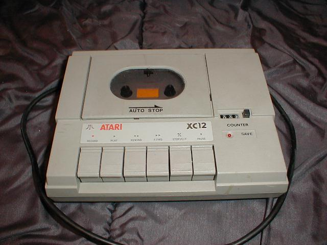
Magnetofon bardzo popularny w Polsce jedynie kolorystycznie zgodny z lini± XE. Produkcja tajwañska.
Powa¿n± wad± tego magnetofonu by³y czêste b³êdy transmisji z powodu z³ego dostrojenia obwodów dyskryminatorów
czêstotliwo¶ci, z³ej jako¶ci styki przewijania powodowa³y ruch ta¶my w czasie, gdy powinna pozostaæ nieruchoma.
Humorystycznie wygl±da³y rozmowy pani przyjmuj±cej sprzêt do naprawy w serwisie firmy PZ Karen:
Klient przynosi magnetofon XC12 w pude³ku i chce oddaæ go do naprawy.
Pani: Jaki jest objaw uszkodzenia?
Klient: Nie staje.
Pani: To proszê go wyj±æ...
Regu³± bowiem by³o, ¿e sprzêt by³ przyjmowany bez opakowañ.
Brak dodatkowego gniazda Serial zmusza³ do pod³±czania magnetofonu na koñcu ³añcucha peryferiów.
Stacja dyskietek XF551
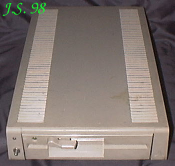
Stacja mog³a zapisywaæ i czytaæ dyskietki 5,25" w czterech formatach:
pojedynczym (S), rozszerzonym (E), podwójnym (D) i podwójnym dwustronnym (DD).
Jest to jedyna stacja zgodna wzorniczo z lini± XE. Sprzedawana z DOSem XE 1.0. Zastosowano w niej napêd 360kB.
Wady: Niskiej jako¶ci p³ytka elektroniki (pêkanie ¶cie¿ek, niekontakty) i zawieszanie siê
stacji podczas rozpoznawania formatu D.
Drukarka XDM121
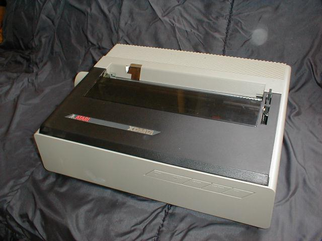
Drukarka z ko³em czcionkowym (Daisy wheel). Niemo¿liwe by³o uzyskanie polskich znaków diakrytycznych.
Drukarka XMM801
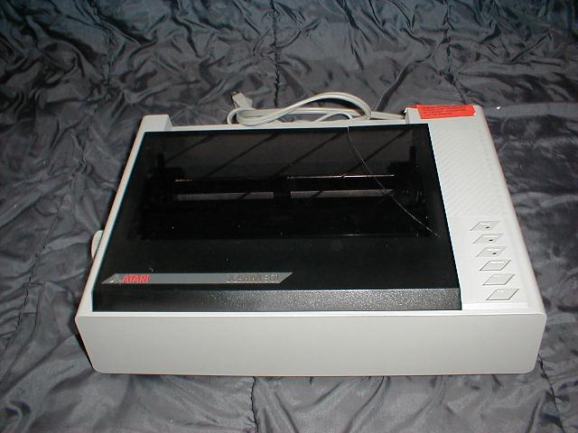
Drukarka 8-ig³owa 80-kolumnowa. Szybko¶æ druku 80zn/sek. Druk na pojedynczych arkuszach lub papierze perforowanym.
Modem XM301
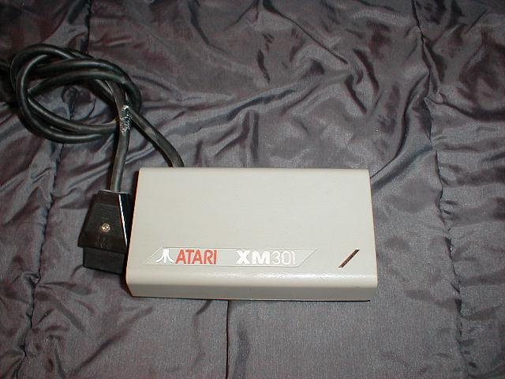
Modem galwaniczny do o¶miobitowych komputerów Atari. Z powodu braku dodatkowego
gniazda Serial musia³ byæ umieszczony jako ostatnie urz±dzenie i nie móg³ wspó³pracowaæ z magnetofonem XC12.
Prêdko¶æ transmisji 300 baud.
Modem SX212
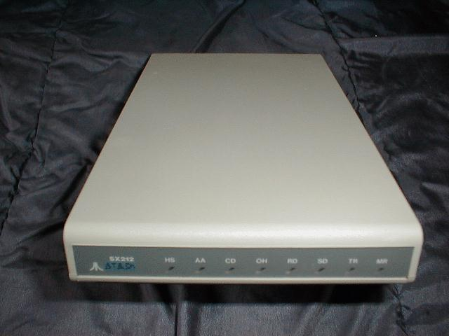
Modem przeznaczony do wspó³pracy z komputerami serii XL/XE i ST. Prêdko¶æ transmisji 1200 baud.
Interfejs XEP80
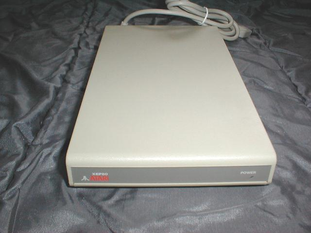
Do³±czany do portu d¿ojstika interfejs XEP80 pozwala na wy¶wietlenie tekstu 80-kolumnowego. Ma standardowe wyj¶cie na drukarkê. Niestety, dzia³a jedynie w trybie monochromatycznym i wy¶wietla wy³±cznie tekst. Czcionka z rastrem 7 X 10 pkt.